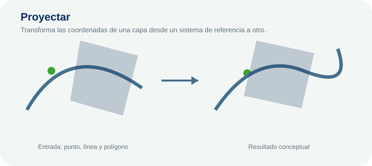
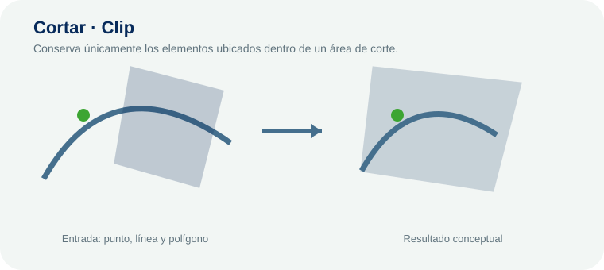
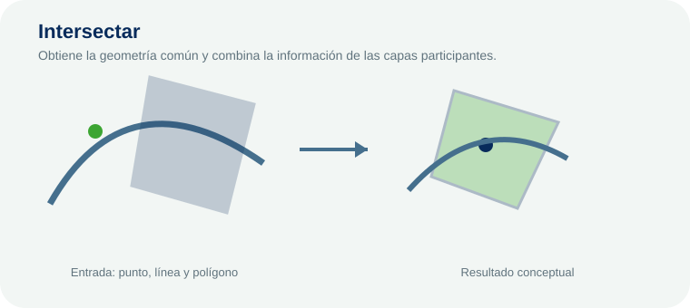
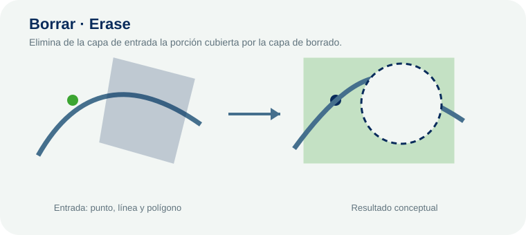
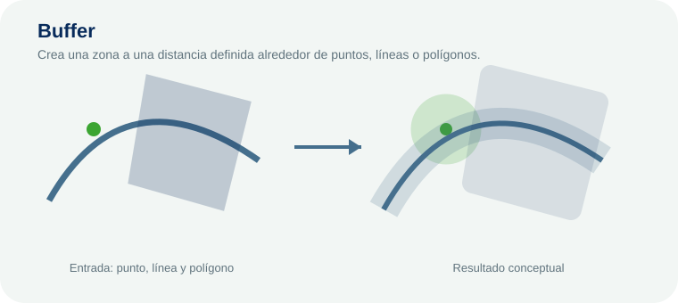

Proyectar
Análisis vectorial
Transforma las coordenadas de una capa desde un sistema de referencia a otro. La operación puede involucrar puntos, líneas y polígonos; el comportamiento exacto depende de la geometría de entrada.
Módulo de fundamentos y análisis espacial previo a los tutoriales específicos de QGIS y ArcGIS Pro.
Operaciones espaciales aplicadas a entidades representadas mediante puntos, líneas y polígonos.

Transforma las coordenadas de una capa desde un sistema de referencia a otro. La operación puede involucrar puntos, líneas y polígonos; el comportamiento exacto depende de la geometría de entrada.

Conserva únicamente los elementos ubicados dentro de un área de corte. La operación puede involucrar puntos, líneas y polígonos; el comportamiento exacto depende de la geometría de entrada.

Obtiene la geometría común y combina la información de las capas participantes. La operación puede involucrar puntos, líneas y polígonos; el comportamiento exacto depende de la geometría de entrada.

Elimina de la capa de entrada la porción cubierta por la capa de borrado. La operación puede involucrar puntos, líneas y polígonos; el comportamiento exacto depende de la geometría de entrada.

Crea una zona a una distancia definida alrededor de puntos, líneas o polígonos. La operación puede involucrar puntos, líneas y polígonos; el comportamiento exacto depende de la geometría de entrada.
Espacio preparado para estructura matricial, álgebra de mapas, reclasificación, análisis de superficie y operaciones entre celdas.